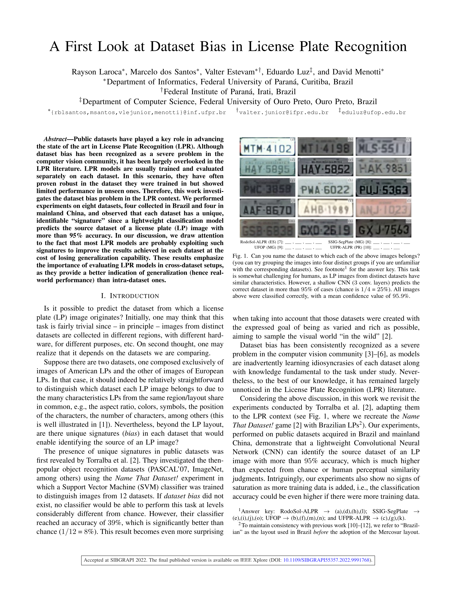

in License Plate Recognition
|
|
|
|
|
|
1 Federal University of Paraná, Curitiba, Brazil
2 Federal Institute of Paraná, Irati, Brazil
3 Federal University of Ouro Preto, Ouro Preto, Brazil
SIBGRAPI 2022
|
|
Can you name the dataset to which each of the above images belongs? (you can try grouping the images into four distinct groups if you are unfamiliar with the corresponding datasets). Hover or tap hereRodoSol-ALPR → (a),(d),(h),(l); |
Abstract
Public datasets have played a key role in advancing the state of the art in License Plate Recognition (LPR). Although dataset bias has been recognized as a severe problem in the computer vision community, it has been largely overlooked in the LPR literature. LPR models are usually trained and evaluated separately on each dataset. In this scenario, they have often proven robust in the dataset they were trained in but showed limited performance in unseen ones. Therefore, this work investigates the dataset bias problem in the LPR context. We performed experiments on eight datasets, four collected in Brazil and four in mainland China, and observed that each dataset has a unique, identifiable “signature” since a lightweight classification model predicts the source dataset of a license plate (LP) image with more than 95% accuracy. In our discussion, we draw attention to the fact that most LPR models are probably exploiting such signatures to improve the results achieved in each dataset at the cost of losing generalization capability. These results emphasize the importance of evaluating LPR models in cross-dataset setups, as they provide a better indication of generalization (hence real-world performance) than intra-dataset ones.
Paper
|  | Rayson Laroca, Marcelo dos Santos, Valter Estevam, Eduardo Luz, David Menotti A First Look at Dataset Bias in License Plate Recognition Conference on Graphics, Patterns and Images (SIBGRAPI), pp. 234-239, Oct. 2022. |
The aim of this paper is two-fold:
|
|
|
|
|
Related Work
This research was motivated by [1], which showed significant drops in LPR performance when well-known OCR models (e.g., CRNN and Facebook's Rosetta) were trained and tested in a leave-one-dataset-out experimental setup. One might initially attribute these disappointing results to existing datasets being heavily biased towards specific regional identifiers. However, the authors of [1] implemented several data augmentation techniques to mitigate overfitting, including one based on character permutation [2], which is known to effectively reduce the impact of such bias on LPR models. This led us to hypothesize that other, more subtle biases may have crept into the datasets.
[1] – R. Laroca, E. V. Cardoso, D. R. Lucio, V. Estevam, D. Menotti, “On the Cross-Dataset Generalization in License Plate Recognition,” in International Conference on Computer Vision Theory and Applications (VISAPP), pp. 166-178, Feb. 2022. [SciTePress] [arXiv]
[2] – G. R. Gonçalves, M. A. Diniz, R. Laroca, D. Menotti, W. R. Schwartz, “Real-Time Automatic License Plate Recognition Through Deep Multi-Task Networks,” in Conference on Graphics, Patterns and Images (SIBGRAPI), pp. 110-117, Oct. 2018. [IEEE Xplore]
You may also be interested in our latest research [3, 4], where we unveiled the presence of near-duplicates in LPR datasets and investigated the potential for improving LPR performance by combining the outputs of multiple recognition models:
[3] – R. Laroca, V. Estevam, A. S. Britto Jr., R. Minetto, and D. Menotti, “Do We Train on Test Data? The Impact of Near-Duplicates on License Plate Recognition,” in International Joint Conference on Neural Networks (IJCNN), pp. 1-8, June 2023. [IEEE Xplore] [arXiv]
[4] – R. Laroca, L. A. Zanlorensi, V. Estevam, R. Minetto, D. Menotti, “Leveraging Model Fusion for Improved License Plate Recognition,” in Iberoamerican Congress on Pattern Recognition (CIARP), pp. 60-75, Nov. 2023. [Springer] [arXiv]
Acknowledgments
This work was partly supported by the Coordination for the Improvement of Higher Education Personnel (CAPES) (# 88881.516265/2020-01), and partly by the National Council for Scientific and Technological Development (CNPq) (# 308879/2020-1). We gratefully acknowledge the support of NVIDIA Corporation with the donation of the Quadro RTX 8000 GPU used for this research.